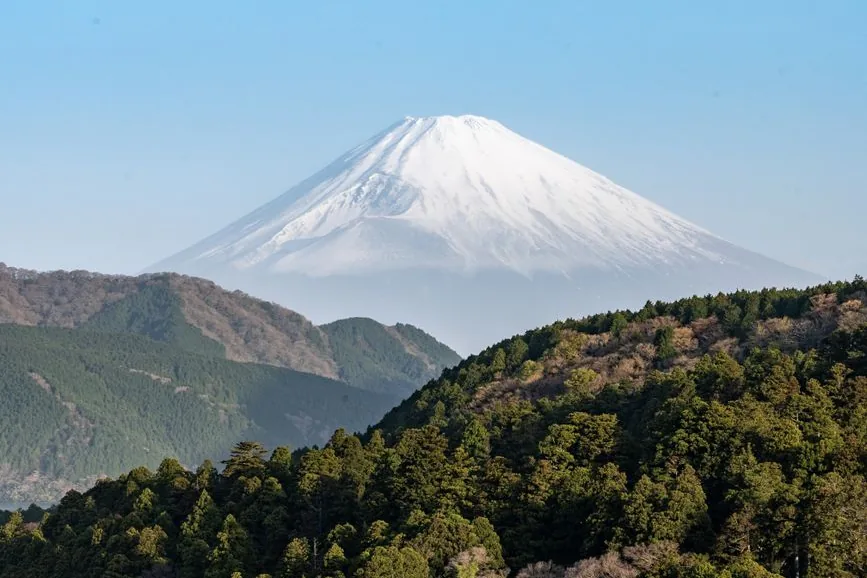
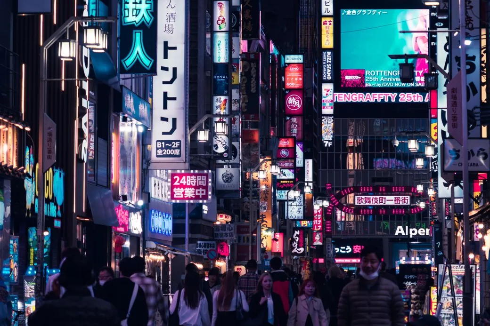

The platforms price this tour almost identically — ¥7,800 is the common figure on both Klook and KKday for the standard Tokyo day trip, and Viator’s guided full-day tours start around US$66. A few hundred yen is not what decides your day.
This does: in June, the whole mountain is visible about 7% of the time, and completely hidden on roughly 63% of days. In December and January it is visible 60–77% of the time. You are not really choosing a platform. You are choosing a month, a departure time, and a cancellation policy.
| If you want… | Book on | Why |
|---|---|---|
| The standard Kawaguchiko circuit | Klook or KKday | Both list it at about ¥7,800; pick on departure time, not price |
| The widest choice of itineraries | KKday | Around 81 Mount Fuji half- and full-day tours listed |
| An English-guided full day | Viator | Guided full-day tours from about US$66 |
| The best odds of seeing the mountain | Nobody sells this | Book December–February, and the earliest departure |
| To keep your options open | Whichever has 24-hour free cancellation | On a mountain hidden two days in three, this is the real product |

The visibility problem, in numbers
Nobody selling you a Fuji tour leads with this, so here it is:
| Season | Chance of seeing the full mountain |
|---|---|
| December–February | 60–77% — cold, dry air, minimal haze |
| March–May | Improving, but hazy |
| June (rainy season) | About 7% fully visible; hidden on ~63% of days |
| July–August | Below 25% through the humid months |
| September–November | Recovering; autumn is the turn |
Two more things the data says: the mountain is most likely to be fully visible at 8am, and from central Tokyo it is visible on roughly 80–100 days a year in total.
The consequences are practical:
- Book the earliest departure the platform offers. A tour that reaches Kawaguchiko at 10am has better odds than one arriving at 1pm.
- Read the cancellation line before the itinerary. Free cancellation up to 24 hours lets you look at the forecast the night before and move. That flexibility is worth more than any price difference between platforms.
- In June and July, plan the day so it works without the mountain. Oshino Hakkai, Oishi Park and the lake are worth a day on their own. Treat Fuji as the bonus, not the point, and the weather can’t ruin your trip.
Platform by platform, for this tour
| Klook | KKday | Viator | |
|---|---|---|---|
| Standard day tour | ≈ ¥7,800 | ≈ ¥7,800 | From about US$66 |
| Number of Fuji tours | Good | ≈ 81 listed | Good |
| Typical stops | Arakurayama Sengen Park, Lake Kawaguchi, Oshino Hakkai | Same circuit | Varies more by listing |
| Unusual variants | Amphibious boat, Lake Yamanaka (≈ ¥8,125) | Wide range of half-days | English-guided full days |
| We can link it | Yes | Yes | No relationship |
Klook and KKday are effectively tied on price for the standard circuit — Arakurayama Sengen Park, Lake Kawaguchi, Oshino Hakkai, and the photo stops. Where they differ is in the edges of the catalogue: KKday lists the most Fuji tours overall, Klook carries variants such as the amphibious boat and Lake Yamanaka at around ¥8,125.
Viator is the place for a guided full day in English, from about US$66. We have no affiliate relationship with Viator and are naming it anyway, because leaving it out would make this list less useful than it should be.

The alternative nobody on a platform will mention
You do not need a tour to reach Mount Fuji.
The Fujikyu highway bus from Busta Shinjuku to Kawaguchiko costs ¥2,200 one way and takes about 1 hour 40 minutes. All seats are reserved; you book at highwaybus.com. That is ¥4,400 return, against roughly ¥7,800 for the tour.
| Guided day tour | Highway bus, done yourself | |
|---|---|---|
| Cost | about ¥7,800 | ¥4,400 return |
| Stops | 3–4, in one loop | Wherever you can reach from Kawaguchiko Station |
| Transfers between stops | Handled | Local buses, and the timetable is on you |
| Departure | Fixed, early | Frequent — you choose |
| If Fuji is hidden | You go anyway | You can look at the forecast and not go |
The honest reading: the ¥3,400 difference buys the links between the stops, and that is where its value sits. Arakurayama Sengen Park, Oshino Hakkai and Oishi Park are awkward to chain together on local buses in a single day. If you only want Kawaguchiko itself, the bus is plainly better — cheaper, and you can cancel by simply not going.
If you have a JR Pass, note that it does not cover the Fujikyu line to Kawaguchiko — see is the JR Pass worth it in 2026? before you assume the journey is free.
Five checks before you book
- What month are you travelling? December–February for the mountain; June for the cloud.
- What time does it depart? Earlier is materially better.
- What is the cancellation term? This matters more here than on almost any other tour.
- Does the itinerary stand on its own? If Fuji hides, is the day still worth it?
- Then compare price — and expect it to be close to identical.
You can check Mount Fuji day tours on Klook and compare KKday, which lists the most options — the two are usually within a few hundred yen, so choose on departure time and cancellation terms. If you’d rather walk Tokyo at your own pace on another day, self-guided audio tours cover the city, and Tiqets handles standalone attraction tickets.
Before you fly: Visit Japan Web speeds up arrival, and you’ll want data for the forecast and the bus times — see the eSIM guidance for Japan or sort it before departure.
For the rest of the trip: other day trips from Tokyo covers Nikko, Hakone and Kamakura, a five-day Tokyo itinerary shows where a Fuji day fits, and what Japan actually costs plus the 2026 tourist tax changes cover the budget.
Frequently asked questions
Is Klook or KKday cheaper for Mount Fuji day tours?
They are effectively tied. The standard Tokyo day trip covering Arakurayama Sengen Park, Lake Kawaguchi and Oshino Hakkai is listed at around 7,800 yen on both. KKday lists more Fuji tours overall, roughly 81 half- and full-day options, so choose on departure time and cancellation terms rather than price.
When is Mount Fuji most likely to be visible?
December through February, when cold dry air keeps haze down: the full mountain is visible 60 to 77% of the time. June is the worst month, with the whole mountain visible only about 7% of the time and completely hidden on roughly 63% of days. Early morning is best, with 8am observations showing the highest full-visibility rate.
Is a Mount Fuji day tour worth it, or should I take the bus?
The Fujikyu highway bus from Busta Shinjuku to Kawaguchiko costs 2,200 yen each way, so 4,400 yen return against about 7,800 yen for a tour. The extra roughly 3,400 yen buys the transfers between Arakurayama, Oshino Hakkai and Oishi Park, which are awkward to chain together on local buses. For Kawaguchiko alone, the bus is the better deal.
How much is the bus from Shinjuku to Kawaguchiko?
2,200 yen one way for adults and 1,100 yen for children, taking about 1 hour 40 minutes. All seats are reserved, booked through highwaybus.com or at the Busta Shinjuku counter.
Does the JR Pass cover Mount Fuji?
Not the final stretch. The Fujikyu Railway line to Kawaguchiko is not a JR line, so the pass does not cover it. Check the full route before assuming the trip is included.
What happens if the weather is bad on my Fuji tour?
Tours generally run regardless, because you are paying for the transport and the itinerary rather than for a view. This is why the cancellation window matters more on this tour than most: free cancellation up to 24 hours lets you check the forecast the night before and move the booking.
Sources & further reading
- Klook, KKday and Viator Mount Fuji day-tour listings and pricing, 2026
- Mount Fuji visibility records by month, including Fuji City observation data at 8am, noon and 4pm
- Fujikyu Bus highway service fares and schedules, Busta Shinjuku to Kawaguchiko, 2026
Prices, departure times and cancellation terms vary per listing and change over time; bus fares and reservation arrangements are also subject to change. Check the specific listing and the operator’s current information before booking. This article contains affiliate links to the platforms we have a relationship with; if you book through them we may earn a commission at no extra cost to you.
Keep reading on Gently Yonder
- The Best Day Trips from Tokyo Nikko, Hakone, Kamakura, Mount Fuji and more — where to go from Tokyo and how to book each.
- Is the JR Pass Worth It in 2026? An honest calculation after the price rise — break-even itineraries and the alternatives.
- Tokyo in 5 Days An unhurried first-timer's itinerary — neighbourhoods grouped so you ride trains less.
- Visit Japan Web: Register Before You Fly How to pre-register immigration and customs for the QR codes that speed up arrival at Narita, Haneda, and Kansai.
- Best eSIM for Japan (2026) How to choose a Japan travel eSIM — coverage, data plans, and the pick for most trips.
- How Much Does a Trip to Japan Cost? A realistic 2026 budget — flights, hotels, rail, food, and where costs surprise people.